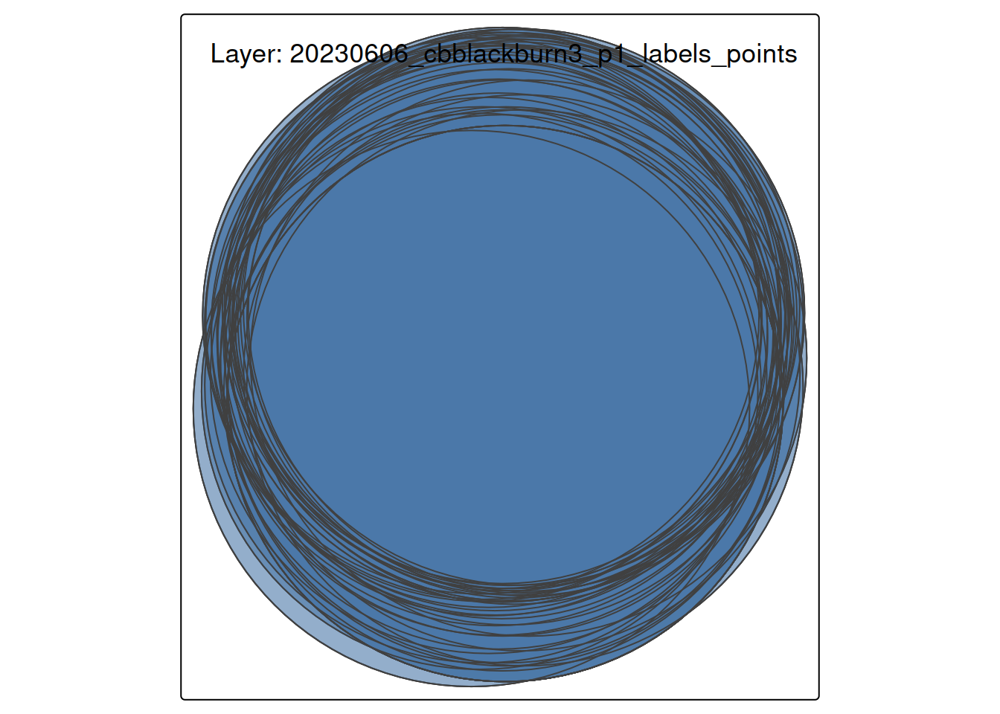

Code
# install.packages(c("sf", "tidyverse", "leaflet", "tmap", "tools", "DT"))This notebook inspects GeoPackage (.gpkg) files—an open, standards-based, and self-describing format for transferring geospatial information.
Validate structural and spatial integrity. Our objective is to inventory the layers within the GeoPackage database, verify Coordinate Reference Systems (CRS), and ensure all geometries conform to the Simple Features standard (ISO 19125).
GeoPackage eliminates the multi-file fragility of Shapefiles. However, a missing CRS is a primary cause of non-reproducibility in spatial analysis, as it prevents data from correctly aligning with other map layers (Obe and Hsu 2021).
Curation Objectives:
We utilize the sf package (Pebesma and Bivand 2023) for structural analysis, which provides an R implementation of the Simple Features standard (Pebesma 2018) and tmap(Tennekes 2018) for thematic mapping. For visual inspection, we use leaflet (Cheng et al. 2024).
If you don’t have these packages installed, run this command once in your R console:
# install.packages(c("sf", "tidyverse", "leaflet", "tmap", "tools", "DT"))This chunk loads the necessary libraries for the session.
library(tidyverse)
library(sf)
library(tmap)
library(leaflet)
library(tools)
library(DT)
library(rstudioapi)
# Validation check for system dependencies (GDAL/GEOS)
if (!require("sf", quietly = TRUE)) {
stop("The 'sf' package is missing. Please install it to proceed.")
}A GeoPackage is a database that may contain multiple datasets. We rely on sf::st_layers(), which queries the SQLite metadata tables without loading the actual geometry. This allows for rapid scanning of large archives.
Select the directory containing the .gpkg files.
# Hybrid Selection Logic (Interactive vs Batch)
if (interactive() && requireNamespace("rstudioapi", quietly = TRUE)) {
message("Running in interactive mode. Please select a directory.")
selected_dir <- rstudioapi::selectDirectory(caption = "Select GeoPackage Directory")
if (is.null(selected_dir)) stop("No directory selected.")
target_dir <- selected_dir
} else {
target_dir <- params$target_dir
}
if (!dir.exists(target_dir)) stop(paste("Directory not found:", target_dir))
message("Analyzing directory: ", target_dir)gpkg_files <- list.files(
path = target_dir,
pattern = "\\.gpkg$",
recursive = TRUE,
full.names = TRUE,
ignore.case = TRUE
)
message("Found ", length(gpkg_files), " GeoPackage files.")A GeoPackage is technically a relational database (SQLite). Therefore, we cannot simply “read the file”; we must query it to list its Layers (tables). The st_layers() function retrieves metadata without loading the heavy geometry data into memory.
Key Metrics Extracted:
Layer Name: The identifier within the database.
Geometry: The topological type (e.g., Polygon, MultiPoint).
CRS: The coordinate reference system ID (e.g., EPSG:4326).
Features: The number of rows (spatial objects).
analyze_gpkg_layers <- function(file_path) {
fname <- basename(file_path)
file_size_mb <- round(file.size(file_path) / 1024^2, 2)
tryCatch({
# 1. List Layers (st_layers creates a summary without reading full geometry)
layer_info <- st_layers(file_path)
# 2. Extract Metadata for each layer
# If file has 0 layers, we return a blank record
if (length(layer_info$name) == 0) {
return(tibble(
FileName = fname,
Size_MB = file_size_mb,
Layer_Name = "EMPTY",
Geometry_Type = NA,
CRS = NA,
Features = 0,
Fields = 0,
Status = "Empty GPKG"
))
}
# Map over layers to get details
purrr::map_dfr(seq_along(layer_info$name), function(i) {
crs_val <- layer_info$crs[[i]]
# Extract the CRS input code (e.g. "EPSG:4326")
crs_code <- if (!is.na(crs_val)) crs_val$input else "Missing"
tibble(
FileName = fname,
Size_MB = file_size_mb,
Layer_Name = layer_info$name[i],
Geometry_Type = paste(layer_info$geomtype[[i]], collapse = ", "),
CRS = as.character(crs_code),
Features = layer_info$features[i],
Fields = layer_info$fields[i],
Status = "Success"
)
})
}, error = function(e) {
tibble(
FileName = fname,
Size_MB = file_size_mb,
Layer_Name = NA, Geometry_Type = NA, CRS = NA, Features = NA, Fields = NA,
Status = paste("Read Failed:", e$message)
)
})
}message("Inspecting GeoPackage layers...")
layer_report <- purrr::map_dfr(gpkg_files, analyze_gpkg_layers)
# Display interactive table
datatable(layer_report,
options = list(pageLength = 10, scrollX = TRUE),
caption = "Table 1: GeoPackage Layer Inventory")Visualizing spatial data is the most effective way to detect Projection Errors.
If a layer lacks a CRS or has an incorrect one, points may appear in “Null Island” (0,0 coordinates) or be distorted. We use tmap to plot the first available layer as a diagnostic check.
# 1. Select the first valid layer
valid_layers <- layer_report %>% filter(Status == "Success", Features > 0)
if (nrow(valid_layers) > 0) {
target_file <- file.path(target_dir, valid_layers$FileName[1])
target_layer <- valid_layers$Layer_Name[1]
message("Visualizing: ", target_layer, " from ", basename(target_file))
# Read the actual data
geo_data <- st_read(target_file, layer = target_layer, quiet = TRUE)
# Plot using tmap in static "plot" mode
tmap_mode("plot")
tm_shape(geo_data) +
tm_borders(col = "black", lwd = 1) +
tm_fill(col = "#4C78A8", alpha = 0.6) +
tm_layout(
title = paste0("Layer: ", target_layer),
frame = TRUE
)
} else {
message("No valid spatial layers found to visualize.")
}
output_dir <- file.path("Results", "Inspect_GPKG")
if (!dir.exists(output_dir)) dir.create(output_dir, recursive = TRUE)
output_file <- file.path(output_dir, paste0("GPKG_Layer_Report_", Sys.Date(), ".csv"))
write_csv(layer_report, output_file)
message("Report saved to: ", output_file)While batch scanning validates structure, Visual Inspection validates content. It is the primary method for detecting “logical errors,” such as a dataset labeled “Canada” that visually appears in “Australia” due to projection issues (Sachdeva 2024). We inspect a single file below. This step uses leaflet to overlay the data on a reference base map (OpenStreetMap).
Note: Leaflet requires the WGS84 coordinate system (EPSG:4326). We perform an on-the-fly transformation to ensure the data renders correctly.
# Default to the first valid file found, or use the parameter
if (exists("layer_report") && nrow(layer_report) > 0) {
target_file <- file.path(target_dir, layer_report$FileName[1])
} else {
target_file <- params$target_file
}
message("Inspecting file: ", basename(target_file))Before reading data, we examine the table of contents. This confirms the schema without loading potentially massive datasets into memory.
st_layers(target_file)Driver: GPKG
Available layers:
layer_name geometry_type features fields
1 20230606_cbblackburn3_p1_labels_points Point 43 18
2 20230606_cbblackburn3_p1_labels_masks Polygon 145 3
crs_name
1 WGS 84 / UTM zone 19N
2 WGS 84 / UTM zone 19NWe load a specific layer to check for value distribution. Anomalies in the summary() output (e.g., a “Population” column with negative values) often indicate data corruption.
# Read the first layer by default
gpkg_data <- st_read(target_file, quiet = TRUE)
# Statistical Summary
summary(gpkg_data) plot class_code scientific_name taxon_id planted_natural
Length :43 Length :43 Length :43 Length :43 Length :43
N.unique : 1 N.unique : 3 N.unique : 3 N.unique : 3 N.unique : 2
N.blank : 0 N.blank : 0 N.blank : 0 N.blank : 0 N.blank : 0
Min.nchar: 3 Min.nchar: 4 Min.nchar:12 Min.nchar:36 Min.nchar: 7
Max.nchar: 3 Max.nchar: 4 Max.nchar:19 Max.nchar:36 Max.nchar: 7
NAs :29
instrument height1_no_shoot_cm height2_no_shoot_cm height3_no_shoot_cm
Length :43 Min. : 0 Min. : 0.0 Min. : 0.0
N.unique : 1 1st Qu.: 0 1st Qu.: 0.0 1st Qu.: 0.0
N.blank : 0 Median : 0 Median : 0.0 Median : 0.0
Min.nchar: 5 Mean :123 Mean :120.5 Mean :122.6
Max.nchar: 5 3rd Qu.:305 3rd Qu.:310.0 3rd Qu.:295.0
Max. :500 Max. :490.0 Max. :480.0
total_height1_cm total_height2_cm total_height3_cm diameter_type
Min. :130 Min. : 0.0 Min. : 0 Length :43
1st Qu.:315 1st Qu.: 0.0 1st Qu.: 0 N.unique : 2
Median :390 Median : 0.0 Median : 0 N.blank : 0
Mean :397 Mean :141.2 Mean :144 Min.nchar: 3
3rd Qu.:490 3rd Qu.:355.0 3rd Qu.:350 Max.nchar: 3
Max. :600 Max. :520.0 Max. :580
diameter1_mm diameter2_mm diameter3_mm comments date_mesured
Min. : 10.00 Min. : 0.00 Min. : 0.0 Length :43 Length :43
1st Qu.: 48.50 1st Qu.: 0.00 1st Qu.: 0.0 N.unique : 1 N.unique :40
Median : 61.00 Median : 0.00 Median : 0.0 N.blank : 0 N.blank : 0
Mean : 58.86 Mean :17.88 Mean :17.4 Min.nchar:18 Min.nchar:29
3rd Qu.: 68.00 3rd Qu.:41.50 3rd Qu.:42.0 Max.nchar:18 Max.nchar:29
Max. :114.00 Max. :80.00 Max. :74.0 NAs :39
geom
POINT :43
epsg:32619 : 0
+proj=utm ...: 0
The code below adapts to the geometry type (Point, Line, or Polygon) to prevent rendering errors. It also performs an on-the-fly transformation to WGS84 (EPSG:4326), which is required for web mapping.
# 1. Read the first layer
gpkg_data <- st_read(target_file, quiet = TRUE)
# 2. Transform to WGS84 for Leaflet
gpkg_data_wgs84 <- st_transform(gpkg_data, crs = 4326)
# 3. Detect Geometry Type
geom_type <- as.character(st_geometry_type(gpkg_data_wgs84)[1])
# 4. Initialize Base Map
map <- leaflet(gpkg_data_wgs84) %>%
addProviderTiles(providers$CartoDB.Positron)
# 5. Conditionally Add Layers
if (grepl("POLYGON", geom_type)) {
map <- map %>%
addPolygons(
color = "#4C78A8", weight = 1, fillOpacity = 0.5,
popup = ~paste("Feature ID:", seq_len(nrow(gpkg_data_wgs84)))
)
} else if (grepl("POINT", geom_type)) {
map <- map %>%
addCircleMarkers(
radius = 5, color = "#4C78A8", stroke = FALSE, fillOpacity = 0.8,
popup = ~paste("Feature ID:", seq_len(nrow(gpkg_data_wgs84)))
)
} else if (grepl("LINE", geom_type)) {
map <- map %>%
addPolylines(
color = "#4C78A8", weight = 2, opacity = 0.8,
popup = ~paste("Feature ID:", seq_len(nrow(gpkg_data_wgs84)))
)
}
mapFigure 1: Interactive verification map. Use zoom to check alignment with the base map.
Based on the analysis above, curators should look for the following risks:
Missing CRS: If the CRS column in Table 1 is “Missing” or NA, the file is technically incomplete. Without a CRS, the data cannot be reliably combined with other datasets.
Geometry Validity: The sf package enforces strict topological rules (e.g., polygon lines cannot cross themselves). If st_read throws an error, the geometry is likely invalid and may require repair in QGIS..
Empty Layers: Layers with Features = 0 are often artifacts of a failed export process and should be flagged for removal or documentation.
While R is excellent for detection, other tools are often better suited for repairing geospatial data. Curators should be aware of:
QGIS (Desktop GIS Software): is a free, open-source, and extremely powerful Geographic Information System. It’s the industry standard for working with geospatial data outside of an programming environment (https://qgis.org).
DB Browser for SQLite (Database Tool): Since a .gpkg file is fundamentally an SQLite database, you can use a database browser to inspect its raw structure (https://sqlitebrowser.org/).
GDAL (Command Line): The ogr2ogr command-line utility is the gold standard for batch converting formats (e.g., Shapefile to GeoPackage) and reprojecting data (https://gdal.org) (Warmerdam, n.d.).
Mapshaper: A web-based tool excellent for simplifying overly complex geometries (e.g., reducing the file size of a detailed coastline) while preserving topology (https://mapshaper.org).
For users who want to run this analysis on a server, in a batch job, or from the command line, here is a pure R script that performs the same process.
Inspect_gpkg_Script.R ScriptDownload the R Script: Inspect_gpkg_Script.R
Inspect_gpkg_submit.sh)#!/bin/bash
#SBATCH --nodes=1
#SBATCH --ntasks=1
#SBATCH --time=00:20:00
#SBATCH --job-name=gpkg_check
# Load R module
module load R
# IMPORTANT: sf requires GDAL/GEOS.
# On many clusters, these are separate modules that must be loaded explicitly.
# Check your cluster documentation (e.g., 'module avail gdal')
module load gdal
module load geos
module load proj
module load R
# Define data directory
DATA_DIR="/scratch/your_user/spatial_data"
OUTPUT_DIR="/scratch/your_user/spatial_results"
# Run Script
Rscript Inspect_GPKG_Script.R $DATA_DIR $OUTPUT_DIR